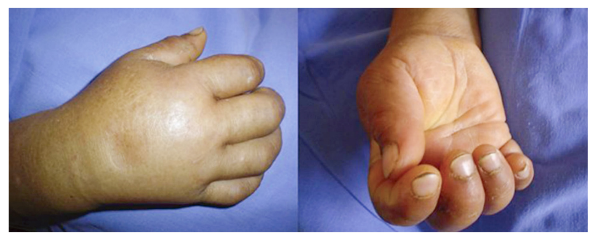

高齡急性雙手凹陷性水腫合併滑膜炎：快速辨識 RS3PE 並警覺潛在惡性腫瘤
緩解性血清陰性對稱型滑膜炎併凹陷性水腫症候群（RS3PE）最早由 McCarty 於 1985 年提出，多見於 60 歲以上男性（男女比約 2:1）。其對低劑量類固醇反應極快，但臨床最重要任務在於排除心腎肝水腫、區分 PMR/EORA，並及早篩檢副腫瘤症候群。
典型臨床表現：伸肌腱腱鞘炎導致手背劇烈水腫與無法握拳
RS3PE 的核心表現為急性、對稱性周邊關節發炎合併顯著凹陷性水腫，最常侵犯雙側手背與足背（偶延伸至腳踝、膝關節或四肢近端）。此類水腫與伸肌腱腱鞘炎（extensor tenosynovitis）高度相關；滑膜炎好發於手腕、掌指關節（MCP）與近端指間關節（PIP）。患者常主訴握力明顯下降、嚴重晨間僵硬甚至無法握拳，亦可能伴隨倦怠、輕度發炎性發熱或偶發蕁麻疹樣皮疹。

實驗室檢驗與影像學檢查：確認發炎反應、排除侵蝕性病變
實驗室數據線索
- 血清陰性：類風濕因子（RF）與抗 CCP 抗體多為陰性，有助與 RA 區分。
- 發炎指標上升：ESR 與 CRP 多呈上升（CRP 上升最一致，越高可能代表病程較不易控制）。
- MMP-3 與 VEGF：MMP-3 異常顯著升高須提高惡性腫瘤警覺；VEGF 偏高支持血管通透性增加機轉，合併腫瘤者升幅更明顯。
- 血球變化：可見輕度慢性病貧血，白血球與血小板通常正常或輕度上升。
影像學診斷角色
影像學目的在於強化臨床判斷並排除其他風濕疾病。在所有工具中，超音波（含彩色都卜勒）最具臨床價值，可清楚顯示伸肌與屈肌腱之腱鞘滑膜炎、滑膜增厚與活躍發炎的高血流（hypervascularity），且具成本低、可重複性高與門診可近性佳等優勢。X 光則用於確認無骨侵蝕，並排除焦磷酸鈣沉積疾病（CPPD）或退化性關節炎。
| 影像檢查方式 | 有助於診斷 RS3PE 的特徵 | 備註 |
|---|---|---|
| X 光 (X-ray) | 傳統上無骨侵蝕 | 最常使用、容易取得、成本低 |
| 超音波 (ultrasonography) | 腱鞘炎（伸肌 > 屈肌） | 容易取得、成本低 |
| 對比增強彩色都卜勒超音波 | 肌腱與關節的高血流；可偵測發炎性水腫、滑膜炎與積液 | 可靠、容易取得、成本效益佳 |
| MRI | 偵測少量積液的最佳方法 | 可近性與成本可能限制使用 |
系統性鑑別診斷：Olivé 準則與 RS3PE、EORA、PMR 完整對照
臨床常引用 Olivé（1997）診斷準則：50 歲以上發病、急性起病、雙側手部明顯凹陷性水腫、對稱性滑膜炎、RF 陰性、影像學無關節侵蝕。評估高齡水腫時，需先排除心衰竭、腎臟病、肝硬化（全身性或下肢重力位水腫，常伴頸靜脈怒張、蛋白尿或低白蛋白血症，且缺乏手背發炎劇烈腫脹與明顯 ESR/CRP 上升）、深層靜脈栓塞、蜂窩性組織炎、結晶性關節炎及藥物（CCB、NSAIDs、類固醇）水腫。
在風濕免疫鑑別中，區分 PMR 的關鍵在於受累部位（PMR 以肩部、臀部、大腿等近端肢體僵痛為主，缺乏遠端凹陷性水腫）；區分 EORA 則仰賴 RF / Anti-CCP 抗體、X 光有無骨侵蝕，以及對低劑量類固醇的反應速度。
| 臨床特徵 | 緩解性血清陰性對稱型滑膜炎併凹陷性水腫症候群 (RS3PE) | 老年發作型類風濕關節炎 (EORA) | 風濕性多發性肌痛症 (PMR) |
|---|---|---|---|
| 發病年齡（歲） | >60 | >60 | >60 |
| 性別 | 男 > 女 | 女 ≈ 男 | 女 > 男 |
| 發病方式 | 數小時內突然發作 | 常見 | 快速（數天到數週） |
| 小關節滑膜炎 | 輕微 | 明顯 | 輕微 |
| 凹陷性水腫 | 100%，非常明顯 | 不常見 | 無 |
| 骨盆帶/大腿部疼痛僵硬(%) | 39.3% | 罕見 | 74% |
| 發燒(%) | 35.7% | 較少 | 19.5% |
| X 光侵蝕 | 無 | 有 | 無 |
| MRI 或超音波顯示的滑膜炎或贅生組織 | 不常見、輕微，但腱鞘炎明顯 | 明顯 | 不常見、輕微 |
| 抗 CCP 抗體(%) | 0 | 常見 | 較少 |
| 類風濕因子 (RF) | 陰性 | 陽性 (39%–57%) | 陽性 (16.5%) |
| 低劑量類固醇反應 | 顯著改善 | 通常不顯著 | 顯著改善 |
| 惡性腫瘤相關率(%) | 20 | 0.44 | 0.56 |
| 是否可達痊癒 | 可以 | 可以（多需 DMARDs） | 可以，通常需 2–3 年 |
惡性腫瘤警訊：將 RS3PE 視為潛在副腫瘤症候群進行分層篩檢
高度懷疑副腫瘤病因的六大紅旗
- 對低劑量類固醇反應不典型，或需高劑量方能控制。
- 伴隨 B symptoms（體重減輕、發燒、夜間盜汗）。
- 實驗室指標 MMP-3 或 VEGF 顯著上升。
- 發病年齡較大（>70 歲）。
- 症狀分布呈現不對稱。
- 病程反覆復發或無法順利減量。
常見相關惡性腫瘤類型
- 實體腫瘤：攝護腺癌、肺癌、胃腸道癌。
- 血液腫瘤：淋巴瘤、白血病、骨髓異常增生症（MDS）。
- 女性特別注意：卵巢癌、乳癌、子宮內膜癌。
副腫瘤症候群相關 RS3PE 往往對類固醇反應有限，但在原發腫瘤獲得治療控制後，關節水腫與症狀常可顯著改善或消失。臨床應依年齡、性別與危險因子安排適當癌症篩檢。
治療策略、減量療程與基層照護核心
一線治療：低劑量類固醇
Prednisolone 10–15 mg/day 起始，多數病人可於 24–72 小時內顯著改善。之後於數週至數月內逐步減量，總療程多為 12–18 個月。NSAIDs 效果有限，不建議作為主要治療。
二線與難治型調整
若反覆復發、無法順利減量、懷疑合併其他風濕免疫疾病或類固醇副作用明顯，可考慮加入傳統 DMARDs（如 methotrexate 或 hydroxychloroquine）以減少類固醇用量。
藥物誘發型與次發性病因
若為藥物誘發，如糖尿病用藥 DPP-4 抑制劑或免疫檢查點抑制劑（如 nivolumab），停藥後多可改善。副腫瘤型則以治療腫瘤本身為優先。
基層醫師在 RS3PE 照護中的關鍵價值：以低劑量類固醇啟動治療並規劃安全減量、及早辨識不典型病程與副腫瘤警訊適時轉介專科，並透過衛教強化病人對復發與警訊症狀的認知。
主要參考資料
- McCarty DJ, et al. Remitting seronegative symmetrical synovitis with pitting edema. RS3PE syndrome. JAMA 1985; 254: 2763-7.
- Docken WP. Clinical manifestations and diagnosis of polymyalgia rheumatica. UpToDate, 2025.
- Origuchi T, et al. Clinical outcomes in the first year of RS3PE syndrome. Mod Rheumatol 2017; 27: 150-4.
- Olivé A, et al. The clinical spectrum of RS3PE. J Rheumatol 1997; 24: 333-6.
- Smith CC. Clinical manifestations and evaluation of edema in adults. UpToDate, 2025.
- Karmacharya P, et al. RS3PE revisited: systematic review and meta-analysis of 331 cases. Clin Exp Rheumatol 2016; 34: 404-15.
- Kawano T, et al. RS3PE syndrome as a manifestation of recurrent ovarian cancer. Intern Med 2023; 62: 629-32.
- Ohta R, et al. Paraneoplastic RS3PE: systematic review. Cureus 2025; 17: e94098.
- Chandra DS, et al. Managing RS3PE: initial steroid response and long-term management with DMARDs. Rom J Rheumatol 2024; 33: 146-50.
- Law J, et al. RS3PE associated with DPP4 inhibitor. Am J Med 2021; 134: e412-e414.
- Gauci ML, et al. RS3PE syndrome induced by nivolumab. Semin Arthritis Rheum 2017; 47: 281-7.
- Lakhmalla M, et al. RS3PE: a review. J Investig Med 2021; 68: 1336-40.
- Li H, Altman RD, Yao Q. RS3PE: Clinical and research development. Curr Rheumatol Rep 2015; 17: 49.